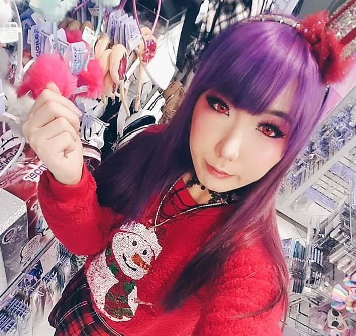

Hello! My name is Violet. I am a 2014 UW Bothell Alumni. I currently work in management and also do glamour modeling work on the side. I was born in Seattle and have resided in Washington my whole life. I love blogging and content creating, watching beauty and skincare videos, baking, and traveling solo! I'm always restless and need something to do so you will never find me having no time on my hands!
(To Be Continued...)